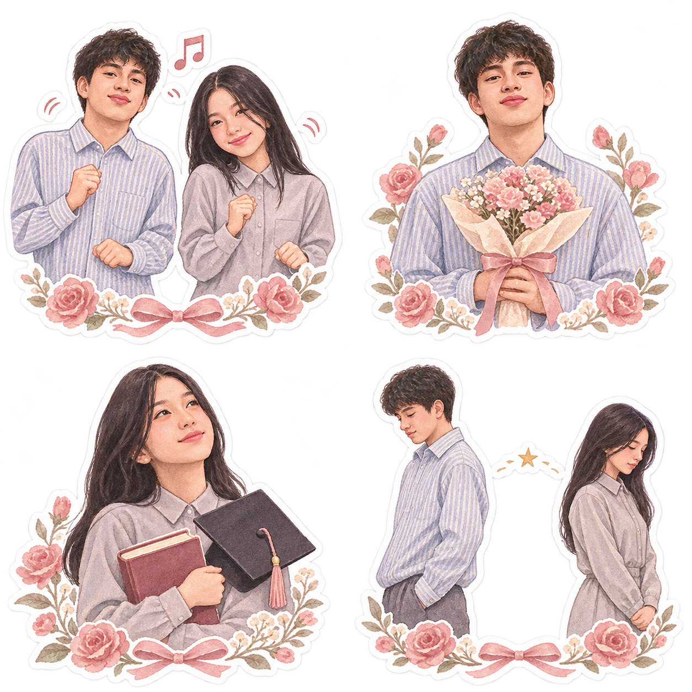
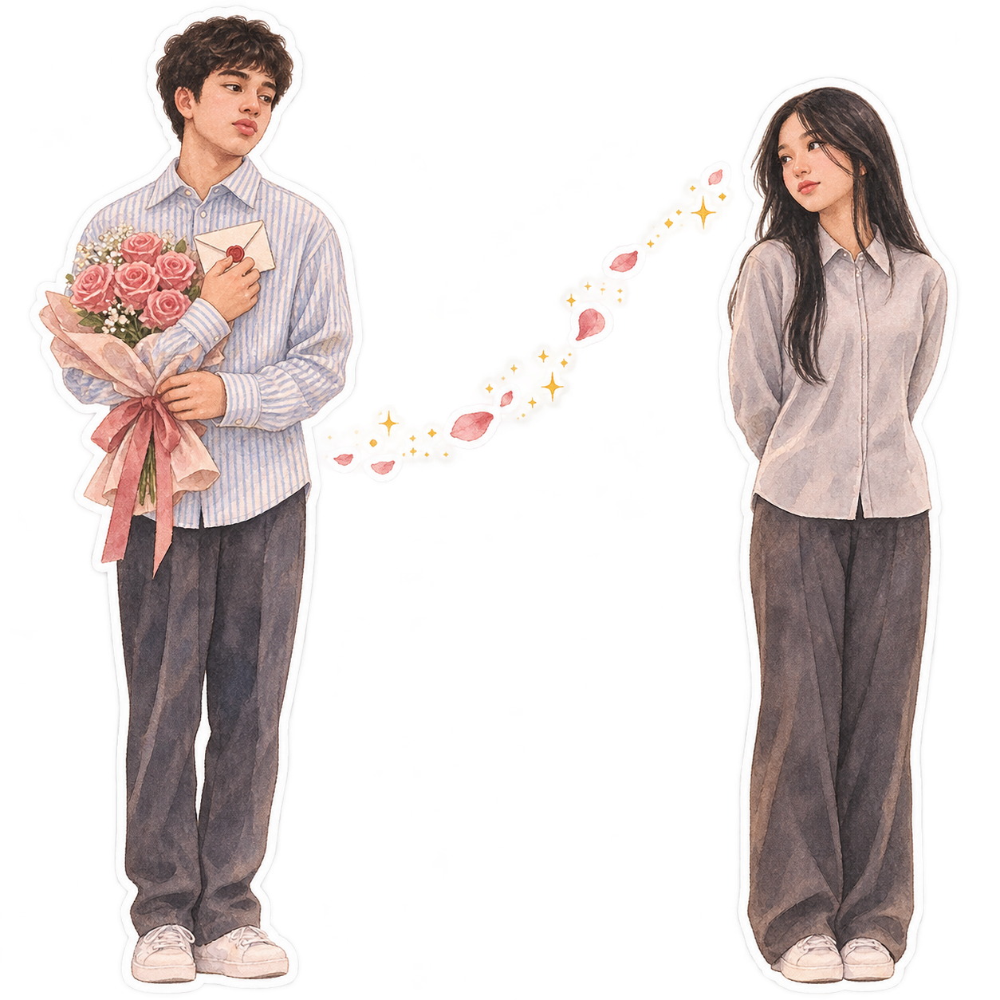

Arrastra la llave hasta el candado o tócala para abrir.
✧ HECHO CON CARIÑO ✧
12 de julio de 2025 · para ti

Aquel baile. Y tú.
Hay una fecha que guardo con cariño. Un ensayo de baile, una historia que me hizo feliz y unas palabras que quería regalarte, junto a estas flores.
Estas flores traen todo lo que quería contarte.
Hay recuerdos que empiezan con una fecha
Me enamoré de ti.
12 de julio de 2025
El día en que te conocí
El 12 de julio de 2025 nos conocimos en un ensayo de baile para la boda de José y Jessica. Yo había ido a ensayar, sin imaginar que ese día iba a conocerte. Te vi y me enamoré a primera vista. Desde entonces, ese ensayo tiene un lugar especial en mis recuerdos.
«Entre los pasos de aquel ensayo, empezó mi ilusión contigo.»
Después de aquel encuentro
Me enamoré de verdad
Me enamoré de ti de verdad. Lo que empezó al verte se convirtió en ilusión por conocerte más y en alegría por compartir una parte de mi vida contigo. Hubo una historia bonita entre nosotros. Yo la viví con el corazón y todavía la recuerdo con ternura.
«Si pudiera poner en un ramo lo que sentí por ti, estas flores vendrían acompañadas de todos mis recuerdos.»
Lo que no pudo ser
Yo imaginaba más momentos
Me habría gustado compartir contigo más días y estar presente en ocasiones especiales. Me cuesta aceptar que nuestra historia no pudo continuar como yo soñaba. Aun así, agradezco haberte conocido y haber vivido lo que compartimos.
«Me quedaron ganas de más tiempo contigo y recuerdos que sigo guardando con cariño.»
Ahora
La distancia entre nosotros
Hoy estamos algo distanciados. A veces siento que somos dos desconocidos que alguna vez tuvieron una historia bonita. Me da tristeza esa distancia. Por eso quise escribirte con calma y reconocer lo que significaste para mí.
«Hoy nos siento lejos. Aquel 12 de julio sigue siendo parte de mi historia.»
La etapa que viene para ti
Tu promoción y tus nuevos sueños
Este año es tu promoción y después vendrá tu camino en enfermería. Aunque no esté en esos momentos especiales, deseo que los disfrutes rodeada de personas que te quieran. Ojalá puedas sentir orgullo de tus pasos y encontrar apoyo cuando lo necesites.
«Te deseo alegría en los días que quizá no llegue a compartir contigo.»
Hoy caminamos por lugares distintos. Lo que viví contigo sigue siendo un recuerdo que cuido con cariño.
Me enamoré de ti y nuestra historia me importó. Hoy escribo esto con cariño y respeto por tu espacio. Puedes recibirlo a tu manera, sin tener que responder.
Gracias por lo que compartimos. Que te vaya bonito en lo que viene. ✨
Tu promoción
Las fotos, los abrazos y las personas que hicieron esta etapa especial. Que puedas vivirla con mucha alegría.
Tu futuro en enfermería
Un camino por descubrir, paso a paso. Que encuentres apoyo para aprender y espacio para disfrutar de tu vida.
Que esta etapa te regale recuerdos que te guste volver a visitar.
Lo que todavía siento

Yo quería estar contigo.
Si pudiera escribir de nuevo una parte de nuestra historia, escogería más tiempo contigo. Me quedaron ganas de más conversaciones, de compartir días sencillos y de estar presente en tus alegrías.
Me habría gustado luchar por un futuro juntos, poniendo de mi parte con paciencia, sinceridad y cariño. Eso es lo que quería decirte cuando las palabras se me quedaban cortas.
Mi deseo era estar contigo. Hoy te lo dejo escrito entre estas flores, con el mismo cariño con el que recuerdo aquel primer encuentro.
También quiero escucharte y respetar tu camino. Si hoy nos toca estar lejos, deseo que encuentres alegría, compañía y todo el apoyo que mereces.